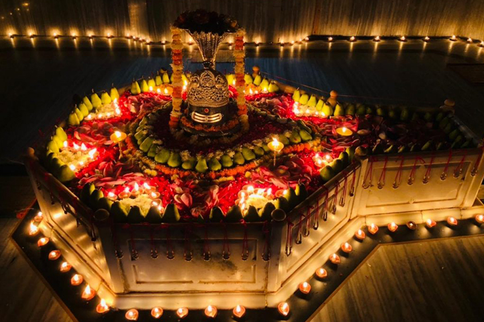
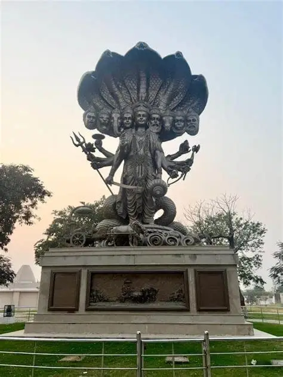
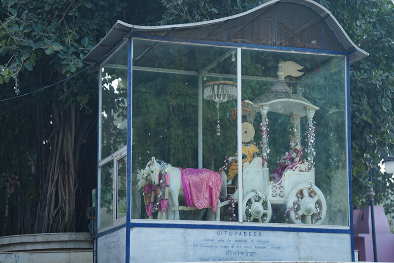
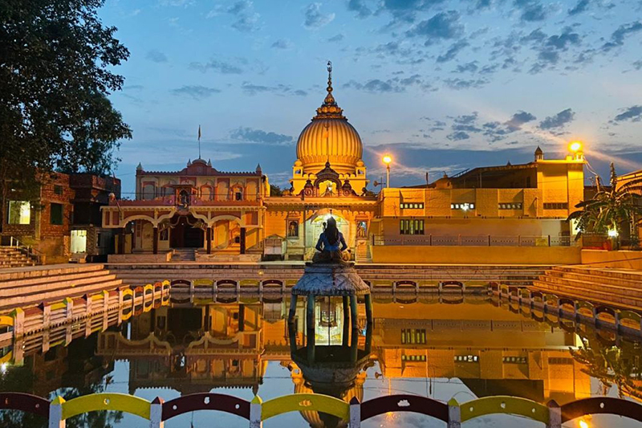
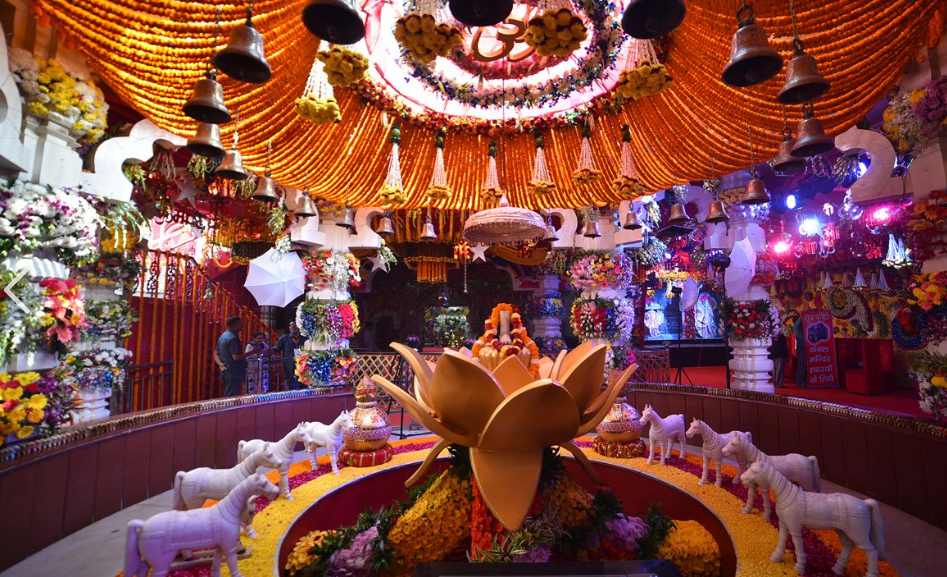
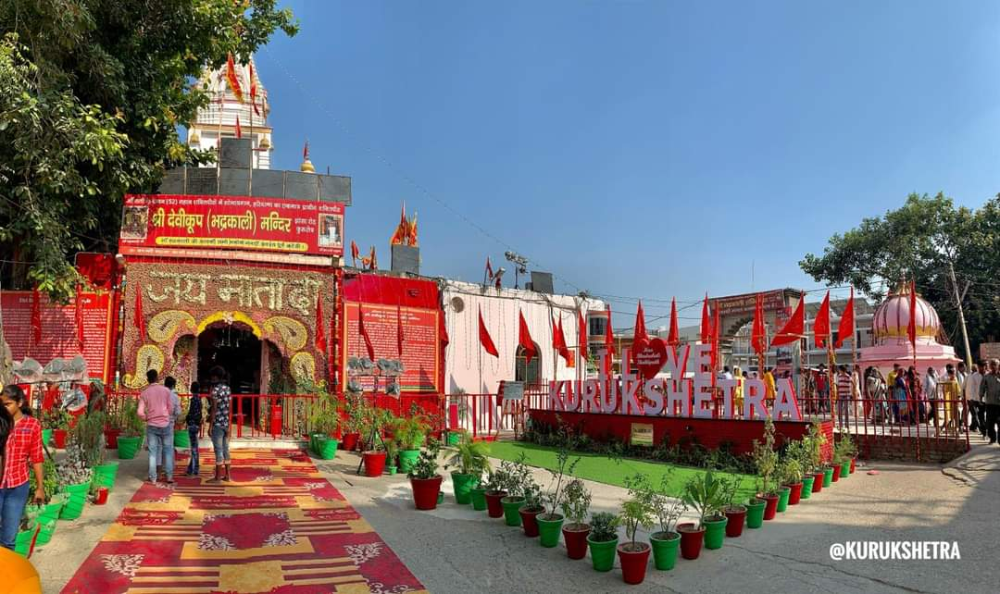
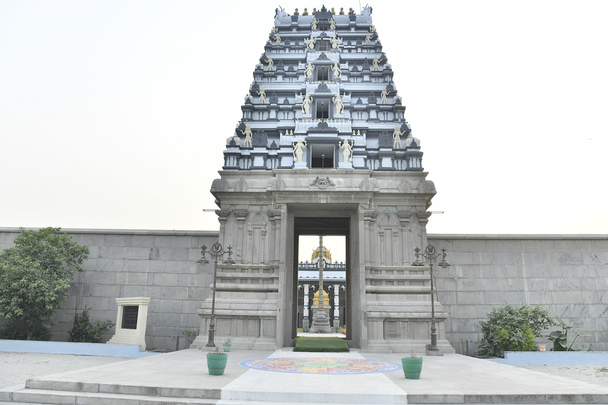
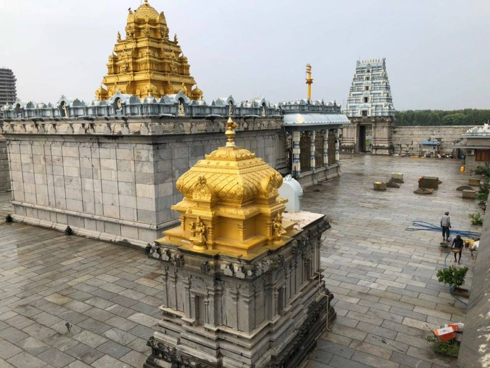

Temples in Kurukshetra
Explore important temples connected with faith, pilgrimage and the Mahabharata tradition.
Jyotisar
Jyotisar is a sacred place traditionally connected with the Bhagavad Gita. According to Hindu tradition, Lord Krishna gave Arjuna guidance here before the Mahabharata battle. It is a peaceful place for the visitors who want to learn about the spiritual importance of Kurukshetra.



Sthaneshwar Mahadev Temple
Sthaneshwar Mahadev Temple is an important Shiva temple in Thanesar, Kurukshetra. It is visited by devotees throughout the year, especially during Mahashivratri. According to local religious tradition, Lord Krishna and the Pandavas visited this place before the Mahabharata battle.
Bhadrakali Temple
Bhadrakali Temple, also known as Shri Devi Koop Temple, is an important Shakti temple in Kurukshetra. It is visited by devotees seeking blessings and taking part in worship. According to local tradition, the Pandavas came here to seek the goddess’s blessings before the Mahabharata battle.


Mata Bala Sundari Temple
Mata Bala Sundari Temple is a respected place of worship in Kurukshetra, visited by devotees seeking the blessings of the goddess. The temple is especially lively during religious festivals, when visitors gather for prayers and traditional celebrations.
Venkateshwar Balaji Temple
Venkateshwar Balaji Temple is a Hindu temple dedicated to Lord Venkateshwar, a form of Lord Vishnu. It gives visitors another peaceful place for prayer and worship in Kurukshetra. The temple reflects the religious diversity of the city and is visited by devotees and tourists throughout the year.



.webp)